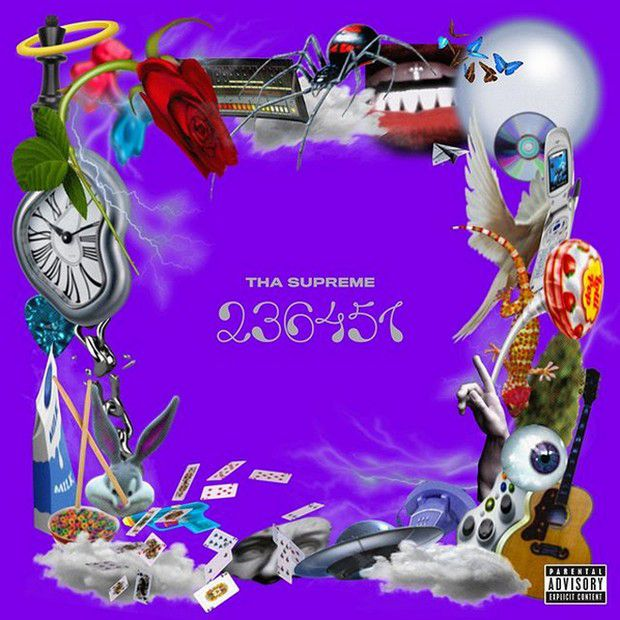

#1: Machete Mixtape 4
Machete Mixtape 4 è un mixtape del collettivo italiano Machete Crew, pubblicato il 5 luglio 2019
dalla Machete Empire Records e da Sony Music.
L'album è stato posizionato alla quinta posizione dei 20 miglior dischi italiani dell'anno stilata
dalla rivista Rolling Stone Italia.
Descrizione
Annunciato il 24 giugno, il mixtape è il primo progetto in quattro anni della Machete dopo il Machete Mixtape Gold Edition. Il progetto comprende i membri del collettivo e alcuni artisti ospiti, come Fabri Fibra, Ghali, Tedua, Lazza, Gemitaiz e Izi.
Promozione
La promozione dell'album si è svolta interamente sul social network Instagram, dove il 19 giugno 2019 Salmo ha pubblicato una foto con scritto "Nuovo album", ripubblicata dal profilo della Machete Empire Records. Nei giorni seguenti molti artisti Machete iniziano a pubblicare sul loro profilo Instagram diverse immagini bianche. Il 24 giugno 2019 pubblicano sulle storie di Instagram una foto raffigurante un codice QR appeso alla stazione di Milano Centrale, che portava al pre-salvataggio dell'album su Spotify.
Tracce
- Lazza & Salmo – Bud Spencer – 1:51
- Salmo & Hell Raton – Gang! – 2:42
- Dani Faiv, Tha Supreme & Fabri Fibra – Yoshi – 3:31
- Salmo & Lazza – Ho paura di uscire 2 – 2:57
- Salmo, Nitro & Marracash – Marylean – 2:24
- Jack the Smoker, Salmo & Beba – Io può – 2:55
- Fabri Fibra & Massimo Pericolo – Star Wars – 3:28
- Tedua, Tha Supreme & Nitro – No Way – 3:38
- Salmo & Lazza – Sugar – 2:40
- Tha Supreme – Doppiogang – 1:23
- Dani Faiv, Salmo & Nitro – FQCMP – 3:01
- Dani Faiv & Shiva – Walter Walzer – 1:58
- Nitro – Ken Shiro – 1:29
- Jack the Smoker & Nitro – Skit Freestyle – 2:11
- Dani Faiv, Salmo & Jack the Smoker – Orange Gulf – 2:50
- Ghali & Sick Luke – Goku – 1:27
- Dani Faiv, Nitro & Jack the Smoker – Machete Bo$$ – 2:29
- Gemitaiz, Izi & Salmo – Mammastomale – 2:34
#2: Playlist
Playlist è il quinto album in studio del rapper italiano Salmo, pubblicato il 9 novembre 2018 dalla Sony Music.
Promozione
L'album è stato annunciato nel mese di giugno 2018, mentre il singolo apripista, 90min è stato reso
disponibile soltanto tre mesi più tardi.
A seguito di numerose mosse di marketing volte a promuovere il disco, Salmo si è esibito in Piazza
Duomo a Milano il 28 ottobre 2018 cantando alcuni brani dell'album travestito da senzatetto. Il
video di questa esibizione è stato reso disponibile in seguito tramite un codice QR situato
nell'edizione fisica dell'album.
Il 30 ottobre 2018, esce sulla piattaforma Pornhub un video nel quale si vede una madre
(interpretata da Vittoria Risi) cogliere in flagrante suo figlio nell'intento di masturbarsi
ascoltando Playlist.
Nel periodo seguente all'album, Salmo ha pubblicato in esclusiva su Netflix il videoclip di Sparare
alla Luna, brano inciso con Coez, mentre il 23 novembre è stato pubblicato il secondo singolo Il
cielo nella stanza, in collaborazione con Nstasia. Il 15 marzo 2019 è stato estratto come singolo
finale Cabriolet, realizzato con Sfera Ebbasta.
Tracce
- 90min – 3:52 (musica: Theron Feemster)
- Stai zitto (feat. Fabri Fibra) – 3:23 (testo: Maurizio Pisciottu, Fabrizio Tarducci)
- Ricchi e morti – 2:18 (musica: Maurizio Pisciottu, Davide Pavanello)
- Dispovery Channel (feat. Nitro) – 3:24 (testo: Maurizio Pisciottu, Nicola Albera – musica: Stefano Tartaglini)
- Cabriolet (feat. Sfera Ebbasta) – 3:06 (testo: Maurizio Pisciottu, Gionata Boschetti – musica: Maurizio Pisciottu, Paolo Alberto Monachetti)
- Ho paura di uscire – 3:18
- Sparare alla Luna (feat. Coez) – 3:32 (testo: Maurizio Pisciottu, Silvano Albanese – musica: Lorenzo Spinosa, Stefano Ceri, Marco Azara, Andrea Sologni, Stefano Bannò, Jacopo Volpe)
- PxM – 3:05
- Il cielo nella stanza (feat. Nstasia) – 3:06 (testo: Maurizio Pisciottu, Ashley Nastasia Griffin – musica: Maurizio Pisciottu, Pietro Milano, Marco Azara, Federico Vaccari)
- Tiè – 1:31 (musica: Maurizio Pisciottu, Davide Pavanello)
- Ora che fai? – 2:11 (musica: Maurizio Pisciottu, Daniele Mungai, Daniele Dezi)
- Perdonami – 2:14 (musica: Davide Mattei)
- Lunedì – 3:25 (musica: Maurizio Pisciottu, Daniele Mungai, Daniele Dezi, Jacopo Lazzarini)
#3: Colpa delle favole
Colpa delle favole è il terzo album in studio del cantautore italiano Ultimo, pubblicato il 5 aprile
2019.
L'album è stato anticipato dai singoli I tuoi particolari, con il quale il cantante ha partecipato
al 69º Festival di Sanremo classificandosi secondo, e Fateme cantà, primo brano del cantautore in
romanesco.
A gennaio 2020 risulta essere l'album più venduto in Italia nel 2019.
Tracce
- Colpa delle favole – 3:04
- I tuoi particolari – 3:39
- Quando fuori piove – 3:41
- Ipocondria – 3:01
- Fateme cantà – 4:11
- Rondini al guinzaglio – 4:00
- Amati sempre – 4:04
- Quella casa che avevamo in mente – 3:24
- Piccola stella – 3:52
- Aperitivo grezzo – 3:23
- Fermo – 2:40
- Il tuo nome (Comunque vada con te) – 3:01
- La stazione dei ricordi – 4:10
#4: 20 (deluxe edition)
20 è il primo album in studio del rapper italiano Capo Plaza, pubblicato il 20 aprile 2018 dalla Sto Records.
Tracce
- 20 – 4:02
- Giù da me – 3:01
- Tesla (feat. Sfera Ebbasta & DrefGold) – 3:05
- Nike Boy – 2:26
- Come me – 3:17
- J$ JP – 3:28
- Interlude (ora è la mia ora) – 2:16
- Ne è valsa la pena (feat. Ghali) – 3:55
- Non cambierò mai – 3:29
- Taxi – 3:14
- Uno squillo – 3:29
- Vabbene – 3:16
- Forte e chiaro – 3:39
- Giovane fuoriclasse – 3:42
#5: 23 6451

23 6451 (traslitterato dall'alfabeto leet in Le basi) è il primo album in studio del rapper e
produttore italiano Tha Supreme, pubblicato il 15 novembre 2019 dalla Epic Records.
L'album è stato posizionato alla terza posizione dei 20 miglior dischi italiani dell'anno stilata
dalla rivista Rolling Stone Italia.
Descrizione
I temi trattati in 23 6451 sono i tipici dell'adolescenza: i rapporti con gli amici e le
istituzioni, il sentirsi diverso dai coetanei e il bisogno di sfogarsi, i rapporti con le ragazze e
l'uso delle droghe. Alle basi musicali «taglienti e caotiche» si alternano delle ballate, come
M12ano, in collaborazione con la sorella Mara Sattei; la traccia Sw1n6o presenta inoltre
campionamenti di musica swing e blues.
Promozione
23 6451 è stato annunciato al pubblico il 18 ottobre 2019, tramite un post su Instagram nell'account del produttore. Il 5 novembre 2019, sono state installate due statue del personaggio cartoon di Tha Supreme alte cinque metri nelle stazioni di Roma e Milano, volte a pubblicizzare l'album. Anticipato dal singolo Blun7 a Swishland, 23 6451 è stato pubblicato il 15 novembre 2019.
Tracce
- Come fa1 – 2:09
- 2ollipop – 2:29
- Fuck 3x – 2:41
- Scuol4 – 2:50
- 5olo – 2:03
- 6itch Remix (feat. Nitro) – 2:31 (testo: Tha Supreme, Nitro)
- Blun7 a Swishland – 2:48
- M8nstar – 2:45
- Oh 9od (feat. Nayt) – 3:24 (testo: Tha Supreme, Nayt)
- Gua10 (feat. Lazza) – 2:57 (testo: Tha Supreme, Lazza)
- Parano1a K1d (feat. Fabri Fibra) – 2:24 (testo: Tha Supreme, Fabri Fibra)
- M12ano (feat. Mara Sattei) – 3:08 (testo: Tha Supreme, Mara Sattei)
- Occh1 Purpl3 (feat. Marracash) – 3:08 (testo: Tha Supreme, Marracash)
- No14 (feat. Dani Faiv) – 2:56 (testo: Tha Supreme, Dani Faiv)
- Ch1 5ei te – 3:04
- Sw1n6o (feat. Salmo) – 3:04 (testo: Tha Supreme, Salmo)
- 7rapper ma1 – 1:27
- 8rosk1 (feat. Mahmood) – 2:52 (testo: Tha Supreme, Mahmood)
- Bubb1e 9um – 1:59
- Pers0na2 (feat. Gemitaiz & MadMan) – 4:12 (testo: Tha Supreme, Gemitaiz, MadMan)